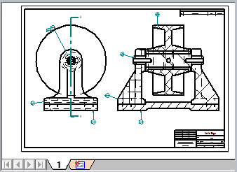
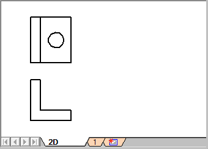
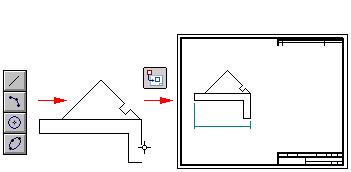
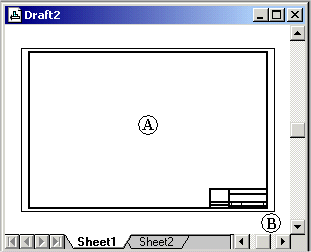
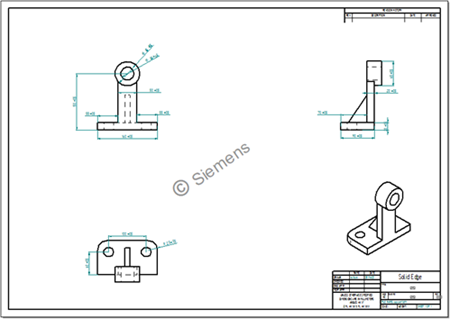
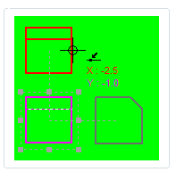

Drawing sheets
Drawing sheet overview
When you create a new draft document filename.dft, it contains the following types of drawing sheets:
-
One or more working sheets. Working sheets are where you place your drawing views of a model.

-
One or more background sheets. Background sheets contain the drawing border and title block information. The word BACKGROUND appears as a non-printing watermark stamped on each background sheet.

-
A 2D Model sheet. The 2D Model sheet is a special drawing sheet that you can draw on using a 1:1 scale. The 2D Model sheet is available but not displayed when you create a new draft document.

-
One or more table sheets. Although table sheets are not created with a new draft file, they are produced by multi-page parts lists and tables and appear in the sheet tab tray. For more information, see Table sheets.
All sheets are displayed, managed, and edited using the sheet tabs located at the bottom of the document window. When you open a new draft document, only the tabs for working sheets are visible in the tray. You can display the other types of sheets using shortcut commands when a sheet tab is selected.
Working sheets, background sheets, and table sheets use different sheet naming conventions and color schemes. You can change these properties using the View tab and the Colors tab in the Solid Edge Options dialog box.
Using drawing sheets
You can place drawing views of a model on the same sheet or on different drawing sheets in the document. For example, you can place a front view and a right view on one drawing sheet and a section view on another drawing sheet. Or you can place views of an assembly model on one sheet, and then place views of subassemblies and individual parts on additional sheets.

You can draw, dimension, and annotate geometry on the 2D Model sheet. Then you can use the 2D Model command to create 2D model views of the design and place them on the active working sheet. You also can drag an AutoCAD drawing file onto the 2D Model sheet as the starting point for creating 2D views in Solid Edge from AutoCAD drawings.

You can change the appearance and formatting of drawing views after you place them using the Drawing View Properties dialog box, which is available from the shortcut menu of a selected drawing view.
Setting up drawing sheets
You can set up your working sheets and background sheets using the File menu→Settings→Sheet Setup command.
The working sheet has two components.
-
The sheet outline (A) shows the orientation and print region of the sheet. You can change the size and orientation of the sheet outline in the Sheet Setup dialog box.
-
The area outside the outline (B) is also part of the drawing sheet, but it does not print.

To set up the drawing area on the 2D Model sheet, first display the 2D Model sheet, and then use the Drawing Area Setup command on the File menu. By default, the 2D Model sheet does not contain a drawing border, but you can add one using the Drawing Area Setup dialog box.
For more information, see Using the 2D Model sheet.
Drawing watermarks
You can use the Watermark command to add a watermark annotation to the background sheet or the working sheet. A watermark is a logo, text, or pattern that is intentionally superimposed onto another image or drawing. Its purpose is to:
-
Make it more difficult for the original drawing to be copied or used without permission.

-
Indicate the status of a drawing, for example, as ‘draft’, ‘under review’, ‘preliminary’, ‘in progress’, or ‘obsolete’.

You can control the visibility of a watermark when you are working on the drawing using the Show watermarks in Draft environment option on the View tab (Solid Edge Options dialog box). You can control whether a watermark is printed by selecting the Include watermarks on print option on the File menu→Paper Print page.
For more information, see Create a watermark.
Sheet tab groups
Sheet groups collect similar types of sheets—such as working sheets, background sheets, and table sheets—into groups in the sheet tab tray. Sheet tab groups are displayed in alternating color groups in the sheet tab tray. This makes it easy to find individual sheets and to print related sheets. For example, table sheets containing multi-page parts lists that span multiple drawing sheets are grouped in the drawing sheet tab tray to facilitate printing as a booklet.
Sheet colors
You can change the color scheme of sheets and sheet tabs using options on the Colors tab in the Solid Edge Options dialog box.
-
You can change the default colors assigned to the sheet tabs.
-
You can choose a different background sheet color. For example, you can choose a different color for the 2D Model sheet than you use for working sheets.

For more information, see Change the colors of sheets and sheet tabs.
Sheet names and numbers
Each sheet group has its own naming convention. Although you cannot specify how names are assigned initially, you can rename individual sheets using the Rename Sheet command on the Sheet tab shortcut menu. Two sheets can have the same name if they are located in different groups.
You can specify how the sheets are labeled and arranged in the sheet tab tray using options on the View tab, Solid Edge Options dialog box (Draft).
When sheet names are long, you can use the option, Display sheet number in tabs, to display the sheet number but not the sheet name. This reduces the width of all tabs, making it easier to find a specific sheet.

By default, sheet tabs are labeled with the sheet name only. However, you can display the sheet number and the name using the option, Display sheet number and name in tabs.
- Working sheet numbers and names
-
1 - Sheet1
2 - Sheet2
- Background sheet numbers and names
-
1 - A4-Sheet
2 - A3-Sheet
- Table sheet numbers and names
-
1–Table1:1
2–Table1:2
You can create property text that references the sheet tab name or number and display it in a callout. The help topic, Property Text source list (Source: From Active Document), describes the property text that you can reference in the document.
For more information, see Using property text.
Sheets and document templates
You can reuse your customized background sheets by saving them in a document template. When you use the template to create a new document, all of the background sheets in the template are copied into the new document.
Displaying drawing sheets in Draft viewers
When you want to make your Draft documents available for review in Solid Edge Viewer, you must specify the sheets to be included in the file. Use the following check boxes on the General page (Solid Edge Options dialog box, Draft environment), to select the sheet types:
-
Include Draft Viewer data in file
-
Include Working Sheets
-
Include 2D Model Sheet
-
Include Background Sheets
-